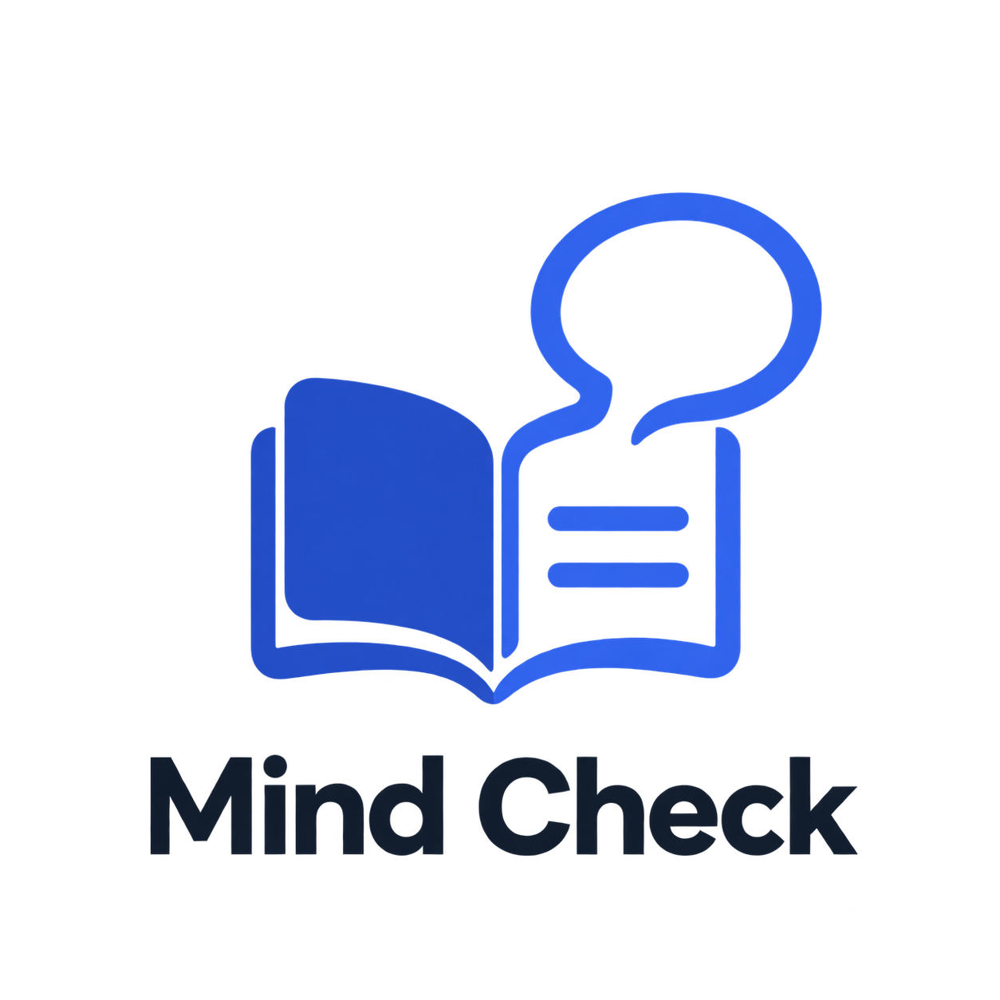
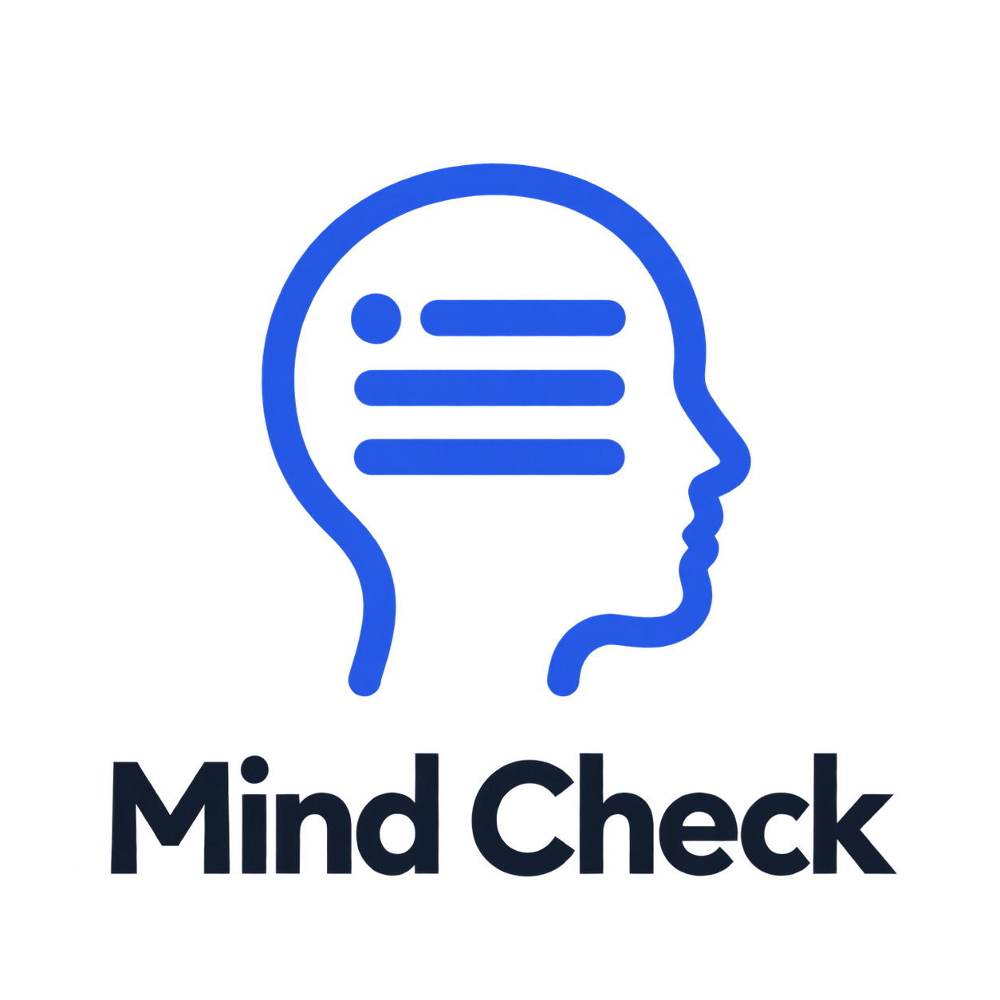
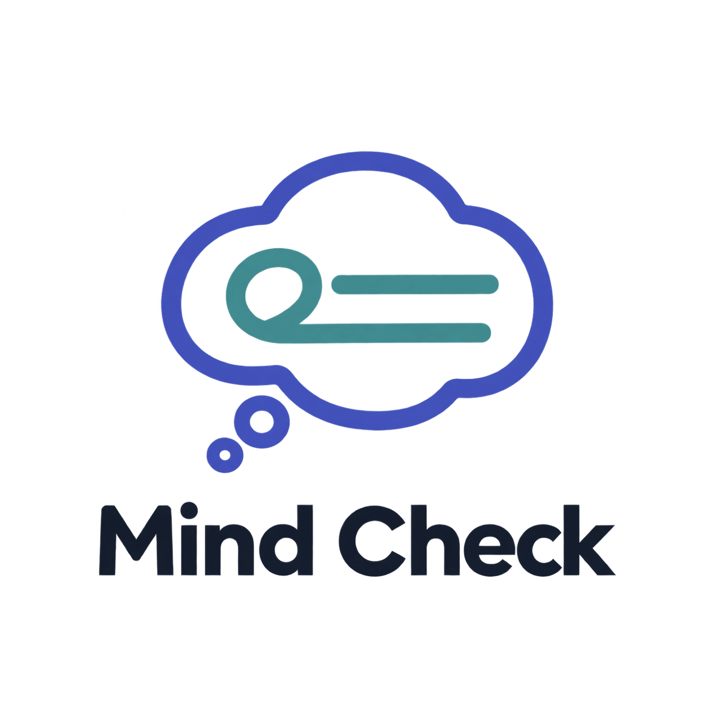
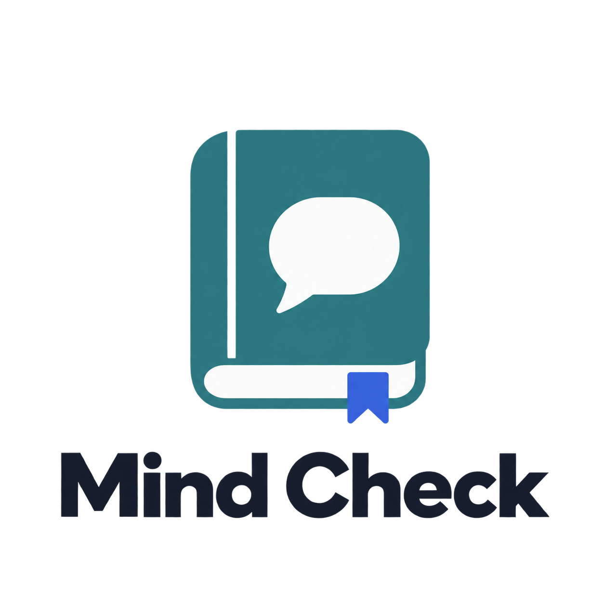

Quatro conceitos gerados com IA para o aplicativo de registro de pensamentos disfuncionais. PNGs com fundo transparente. Clique nas imagens para abrir os arquivos originais.

O diário e o balão representam registrar pensamentos.

A silhueta e as linhas representam pensamentos anotados.

O balão e as linhas representam a organização das ideias.

O caderno com balão representa reflexão pessoal e registro.